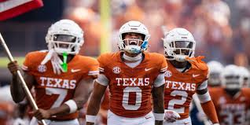

I play football for Austin High. I play Wide Reciever and have played football my whole life, I am a huge fan of the Texas Longhorns and the LA Rams of the NFL. I am a sophomore at Austin High and am excited to get into the new season. Next year I really hope to be on varsity and succeed. Football has always been apart of my life and I am always doing something related to it. I have been going to Texas Longhorn games my whole life, my parents are diehards and so am I. I am excited for what Arch Manning could do this year and I hope that we can win the Natty!!
I love to play video games with my friends and sometimes by myself. Me and my friends play a lot of Siege and College Football 25! Video Games are a very nice way to chill out when you dont have much to do.
Over the summer I went to Japan with my friend Luke, we went with a couple other classmates including Sal. We all had a blast, and we went all over Japan. It was really nice experiencing a whole differant world, trying all the new food, and meeting all the new people. It was very fun experiencing all of the fun things in Japan. We went to Tokyo, Kyoto, and Osaka. I hope to be able to go back their again and share some of my experiences with people who didnt go. I took so many pictures that I could make a movie! It was an absolute blast to be their and I wouldnt trade that experience for the world.
Learn about Japan Quickly!